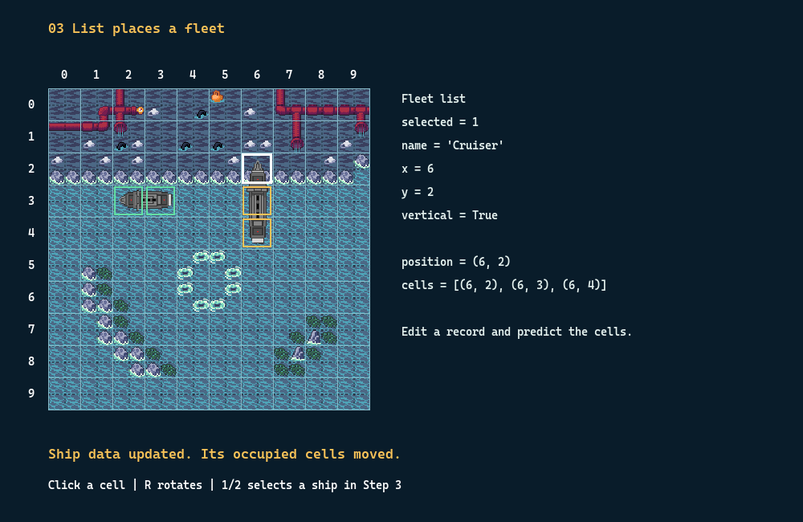
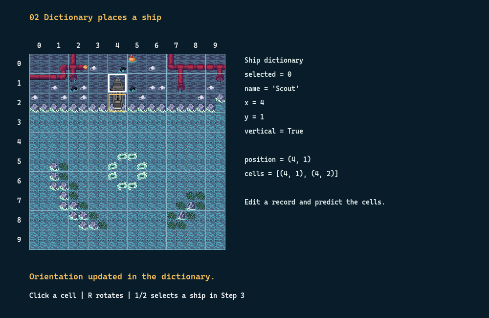

Lesson 2 · Data structures
Captain,
place your fleet!
Change a few values.
Watch your ships move.
Today you control a cell, a ship and a fleet.

Lesson 2 · Data structures
Change a few values.
Watch your ships move.
Today you control a cell, a ship and a fleet.

Point to a ship. What do we need to remember about it?
A data structure keeps related values together so we can find and change them.
| Python structure | What it does | Our game example |
|---|---|---|
| tuple | Keeps values in order. Assign a new tuple when the coordinates change. | position = (4, 1) |
| dict | Finds values by named keys, such as x and y. | ship['x'] |
| list | Keeps items in order. We can change, add or remove items. | fleet[0] |
| Mission | Open this file | Your job |
|---|---|---|
| A · Find a cell | 01_position.py | Change a coordinate pair. |
| B · Control a ship | 02_ship_record.py | Move it, turn it and try a longer ship. |
| C · Command a fleet | 03_fleet.py | Choose one ship and move it on its own. |
Your working folder is teaching/days/day02/increments.
Before each run, point to the cells you expect to change.
increments/01_position.py · Edit line 24
position = (2, 3)
# A1 — change to (4, 1), then run.
# A2 — change to (1, 4), then run.Point first! Will swapping the numbers move the outline?
A1 selects column 4, row 1.
A2 selects column 1, row 4.
Index 0 gives the column. Index 1 gives the row.
Quick look · 00_scalars.py line 23 stores col, row = 2, 3. A tuple keeps that pair together.
increments/02_ship_record.py · Edit lines 26–27
Start with the original ship data. Change these two fields inside ship.
'x': 4,
'y': 1,Scout is two cells long. Which two cells will it cover?
Before the edit · [(2, 3), (3, 3)]
After the edit · [(4, 1), (5, 1)]
The ship is still horizontal.
Save your edit → close the game → run the same file again.
increments/02_ship_record.py · Edit line 28

'vertical': True,Keep x=4 and y=1 from B1.
Which cell stays? Which cell moves?
The first cell stays at (4, 1).
The other moves from (5, 1) to (4, 2).
Save your edit → close the game → run the same file again.
increments/02_ship_record.py · Edit line 25
'name': 'Cruiser',Keep the position and direction from B1 and B2.
Scout uses 2 cells. Cruiser uses 3. Where does the extra cell go?
Your vertical Cruiser covers[(4, 1), (4, 2), (4, 3)].
Save your edit → close the game → run the same file again.
increments/02_ship_record.py · Read line 56
Run your B3 file. Click column 6, row 2.
current['x'], current['y'] = clickedLook at the ship, then the data panel. What changed together?
The panel shows x=6 and y=2.
The Cruiser covers [(6, 2), (6, 3), (6, 4)].
Read this line and try the click. Restarting uses your saved starting position (4, 1).
Save your B3 edits, stretch and look away from the screen.
Next mission · two ships to command.
increments/03_fleet.py · Edit line 26
Start with this file’s original fleet. Edit the second ship record.
{'name': 'Cruiser', 'x': 6, 'y': 2, 'vertical': True},Will Scout follow Cruiser? Make your prediction.
Cruiser moves to [(6, 2), (6, 3), (6, 4)].
Scout stays at [(2, 3), (3, 3)]. Each ship has its own record.
Save your edit → close the game → run the same file again.
increments/03_fleet.py · Edit line 29
selected = 1Keep C1. Change the starting selection from 0 to 1.
Which ship gets the gold outline?
Cruiser is fleet[1], so it gets the gold outline.
Scout is fleet[0]. Both ships keep their cells.
Save your edit → close the game → run the same file again.
increments/03_fleet.py · Edit line 25
Keep C1 and C2. Now edit the first ship record.
{'name': 'Scout', 'x': 4, 'y': 1, 'vertical': False},Point to Scout’s new cells. Where will Cruiser be?
Scout moves to [(4, 1), (5, 1)].
Cruiser stays at [(6, 2), (6, 3), (6, 4)].
Press 1 to inspect Scout in the panel.
Save your edit → close the game → run the same file again.
increments/03_fleet.py · Read lines 55–57
Keep your C3 data. Press 1 to choose Scout.
| Try this | Predict before clicking |
|---|---|
| Click (6, 2) | Can Scout share a cell with Cruiser? |
| Click (9, 9) | Can a two-cell ship fit from here? |
Both moves are rejected.
Scout stays at (4, 1) and still covers [(4, 1), (5, 1)].
if can_place(fleet, candidate, ignore=current['name']):
current['x'], current['y'] = clickedTake one minute. Show a partner what your code can do.
Can you explain why we used a tuple, a dictionary and a list?
increments/data_structures.py · Edit line 14
names.append('Carrier')
# Change 'Carrier' to 'Rescue'.Will the list have 2, 3 or 4 names?
Three names · Scout, Cruiser, Rescue.len(names) is 3.
Run this small example in the terminal. For a board move, use C1 or C3.
increments/data_structures.py · Edit line 25
fleet[0]['x'] = 6
# Change 6 to 7, then run.Will ship['x'] change too?
Yes! ship and fleet[0] refer to the same dictionary.
Both report 7. The second ship still has x=5.
Compare the terminal output. In the fleet game, each ship has a separate record.
increments/data_structures.py · Edit line 32
targets = {(2, 3), (2, 3), (4, 1), (6, 2)}Add (6, 2) to the original set.
Four entries are written. How many different targets are there?
Three! A set keeps distinct values.
The two copies of (2, 3) count once.
Check the count in the terminal. A set has no numbered positions.